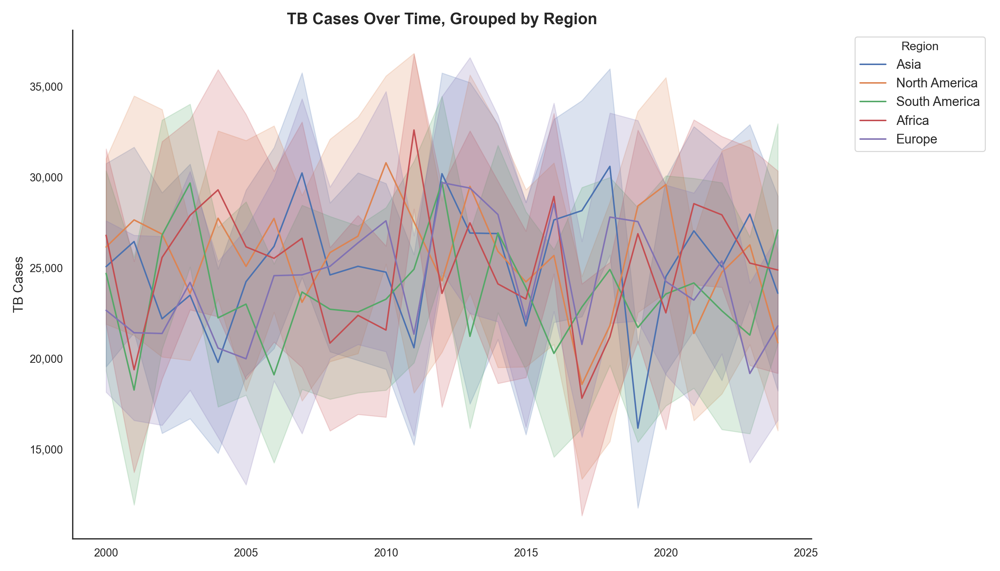
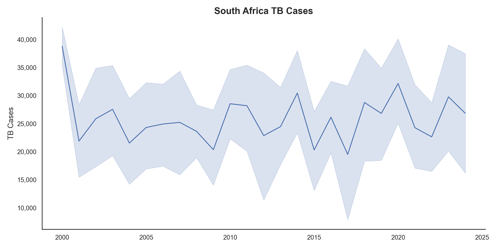
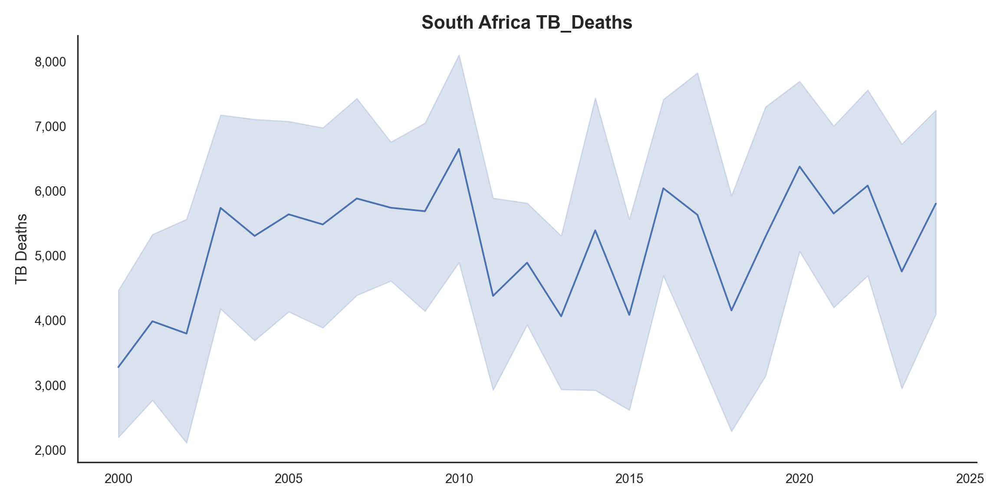
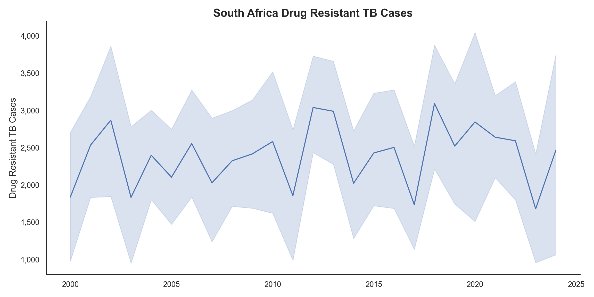
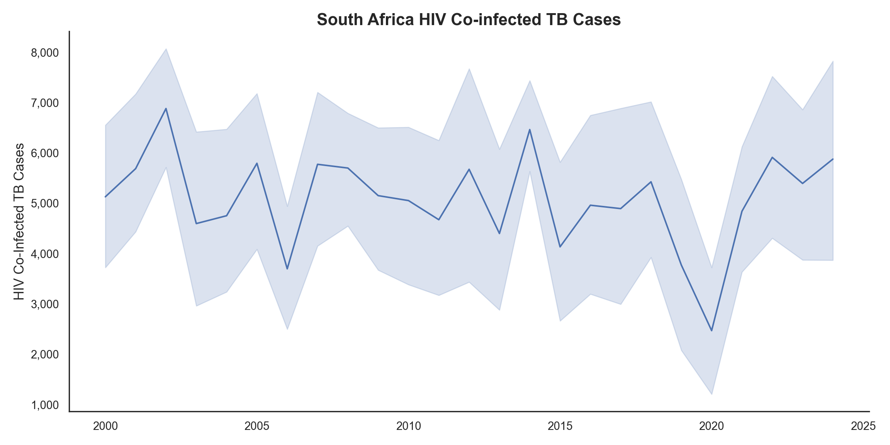

import pandas as pd
import numpy as np
import seaborn as sns
import math
import matplotlib.pyplot as plt
import matplotlib.ticker as ticker
sns.set()
from sklearn.model_selection import train_test_split, GridSearchCV
from sklearn.ensemble import RandomForestRegressor
from sklearn.metrics import mean_squared_error
from statsmodels.tsa.holtwinters import ExponentialSmoothingTBTrends
Introduction:
Tuberculosis (TB) remains a significant global health challenge, affecting millions of people worldwide, particularly in Africa, Asia, and Latin America. The World Health Organization (WHO) adopted a blueprint in 2014, the End TB Strategy, which aims to reduce incidence by 80% by the year 2030, using the year 2015 as a baseline.
This project conducts an exploratory data analysis (EDA) of the Tuberculosis_Trends.csv (Kyada, 2024) dataset available on Kaggle, which captures comprehensive country-level public health data from 2000 - 2024. The primary objective is to uncover patterns and relationships between TB indicators (cases, mortality, treatment success) and various socio-economic and health infrastructure metrics to identify key drivers of disease prevalence. Specifically, this analysis aims to answer:
How have TB cases and deaths trended in South Africa compared to other regions?
What socio-economic or health infrastructure factors show the strongest correlation with reduced TB burden?
Does the current trajectory indicate South Africa will meet the 2030 reduction targets?
Import modules:
Analysis was conducted primarily using Python, leveraging key libraries from the scientific Python ecosystem: pandas (team, 2020) for data manipulation, Numpy (Harris et al., 2020) for numerical operations, Seaborn (Waskom, 2021), Matplotlib (Hunter, 2007) for visualization, and SciPy (Virtanen et al., 2020) for scientific computing.
The following script outlines the necessary modules imported to facilitate the project’s data processing and exploratory visualization stages:
Load dataset:
This step involves loading the raw Tuberculosis_Trends.csv file into a structured data format using the pandas module. The pd.read_csv() function is used to read the data from the local file path into a DataFrame named data for subsequent analysis. This action transforms the raw comma-separated values into a manipulable table.
data = pd.read_csv('Tuberculosis_Trends.csv')Data Scope and Key Variables:
<class 'pandas.core.frame.DataFrame'>
RangeIndex: 3000 entries, 0 to 2999
Data columns (total 22 columns):
# Column Non-Null Count Dtype
--- ------ -------------- -----
0 Country 3000 non-null object
1 Region 3000 non-null object
2 Income_Level 3000 non-null object
3 Year 3000 non-null int64
4 TB_Cases 3000 non-null int64
5 TB_Deaths 3000 non-null int64
6 TB_Incidence_Rate 3000 non-null float64
7 TB_Mortality_Rate 3000 non-null float64
8 TB_Treatment_Success_Rate 3000 non-null float64
9 Drug_Resistant_TB_Cases 3000 non-null int64
10 HIV_CoInfected_TB_Cases 3000 non-null int64
11 Population 3000 non-null int64
12 GDP_Per_Capita 3000 non-null int64
13 Health_Expenditure_Per_Capita 3000 non-null int64
14 Urban_Population_Percentage 3000 non-null float64
15 Malnutrition_Prevalence 3000 non-null float64
16 Smoking_Prevalence 3000 non-null float64
17 TB_Doctors_Per_100K 3000 non-null float64
18 TB_Hospitals_Per_Million 3000 non-null float64
19 Access_To_Health_Services 3000 non-null float64
20 BCG_Vaccination_Coverage 3000 non-null float64
21 HIV_Testing_Coverage 3000 non-null float64
dtypes: float64(11), int64(8), object(3)
memory usage: 515.8+ KBAn initial overview of the column information confirms a robust dataset, providing ample scope for exploring complex relationships. For this project, key variables of interest include TB_Incidence_Rate, TB_Mortality_Rate, GDP_Per_Capita, Health_Expenditure_Per_Capita, and BCG_Vaccination_Coverage, as these directly relate to potential drivers of disease prevaence outlined in the problem statement.
Data quality Assessment:
Country 0
Region 0
Income_Level 0
Year 0
TB_Cases 0
TB_Deaths 0
TB_Incidence_Rate 0
TB_Mortality_Rate 0
TB_Treatment_Success_Rate 0
Drug_Resistant_TB_Cases 0
HIV_CoInfected_TB_Cases 0
Population 0
GDP_Per_Capita 0
Health_Expenditure_Per_Capita 0
Urban_Population_Percentage 0
Malnutrition_Prevalence 0
Smoking_Prevalence 0
TB_Doctors_Per_100K 0
TB_Hospitals_Per_Million 0
Access_To_Health_Services 0
BCG_Vaccination_Coverage 0
HIV_Testing_Coverage 0
dtype: int64This high quality is a significant advantage, as real-world health data is often messy. The completeness of the data for this analysis minimizes potential biases from imputation methods and strengthens the reliability of all subsequent findings and the predictive model’s accuracy.

The persistent disparity between high-burden regions (Asia, Africa) and low-burden regions (North America, Europe) underscores the critical need for targeted, context-specific interventions. This initial observation justifies a deeper dive into country-level socio-economic factors (e.g., GDP, health expenditure) to understand the drivers behind these regional differences, rather than just observing them.


Figure 2 and Figure 3 provide a granular view of South Africa. While TB cases have fluctuated, there is a general trend of decreasing TB deaths since the early 2000s, indicating potential improvements in treatment efficacy or access to care.
The official death counts can be complex due to reporting issues (e.g., HIV and TB are often under-reported on death certificates).


Figure 4 and Figure 5 highlights the persistent challenges of drug-resistant TB and HIV co-infection within South Africa. The trends for HIV co-infected cases show considerable variability, with peaks around 2005 and 2015, suggesting a need for targeted interventions.
Determining Correlation:

Figure 6 presents a correlation heatmap generated from the Pearson correlation coefficients calculated for South Africa’s data.
The observed weak correlations for most variables are typical of complex, multifactorial public health issues, highlighting that no single factor operates in isolation.
The strongest correlation observed in South Africa is the negative relationship between Access_To_Health_Services and TB_Deaths. This insight is a key takeaway: increasing access to care is potentially the single most impactful structural intervention for reducing TB mortality, which can directly inform policy and resource allocation.
Predictive Modeling:
| Features Used in Model (X) |
|---|
| Year |
| TB_Deaths |
| TB_Incidence_Rate |
| TB_Mortality_Rate |
| TB_Treatment_Success_Rate |
| Drug_Resistant_TB_Cases |
| HIV_CoInfected_TB_Cases |
| Population |
| GDP_Per_Capita |
| Health_Expenditure_Per_Capita |
| Urban_Population_Percentage |
| Malnutrition_Prevalence |
| Smoking_Prevalence |
| TB_Doctors_Per_100K |
| TB_Hospitals_Per_Million |
| Access_To_Health_Services |
| BCG_Vaccination_Coverage |
| HIV_Testing_Coverage |
To move beyond exploratory analysis and assess the potential for forecasting disease burden, a Random Forest Regressor model was trained to predict TB_Cases in South Africa. The dataset was split into training and testing sets.
| Hyperparameter | Optimal Value |
|:------------------|----------------:|
| max_depth | 10 |
| min_samples_split | 10 |
| n_estimators | 50 |GridSearchCV(cv=5, estimator=RandomForestRegressor(random_state=12345),
param_grid={'max_depth': [None, 10, 20, 30],
'min_samples_split': [2, 5, 10],
'n_estimators': [50, 100, 150, 200]},
scoring='neg_mean_squared_error')In a Jupyter environment, please rerun this cell to show the HTML representation or trust the notebook. On GitHub, the HTML representation is unable to render, please try loading this page with nbviewer.org.
Parameters
| estimator | RandomForestR...m_state=12345) | |
| param_grid | {'max_depth': [None, 10, ...], 'min_samples_split': [2, 5, ...], 'n_estimators': [50, 100, ...]} | |
| scoring | 'neg_mean_squared_error' | |
| n_jobs | None | |
| refit | True | |
| cv | 5 | |
| verbose | 0 | |
| pre_dispatch | '2*n_jobs' | |
| error_score | nan | |
| return_train_score | False |
RandomForestRegressor(max_depth=10, min_samples_split=10, n_estimators=50,
random_state=12345)Parameters
| n_estimators | 50 | |
| criterion | 'squared_error' | |
| max_depth | 10 | |
| min_samples_split | 10 | |
| min_samples_leaf | 1 | |
| min_weight_fraction_leaf | 0.0 | |
| max_features | 1.0 | |
| max_leaf_nodes | None | |
| min_impurity_decrease | 0.0 | |
| bootstrap | True | |
| oob_score | False | |
| n_jobs | None | |
| random_state | 12345 | |
| verbose | 0 | |
| warm_start | False | |
| ccp_alpha | 0.0 | |
| max_samples | None | |
| monotonic_cst | None |
GridSearchCV was employed to systematically identify the optimal model configuration, balancing predictive accuracy with the risk of overfitting. The finalized hyperparameters (max depth 10, min samples split 10, n_estimators 50) ensure the model provides robust, generalized predictions.
RandomForestRegressor(max_depth=10, min_samples_split=10, n_estimators=50,
random_state=12345)In a Jupyter environment, please rerun this cell to show the HTML representation or trust the notebook. On GitHub, the HTML representation is unable to render, please try loading this page with nbviewer.org.
Parameters
| n_estimators | 50 | |
| criterion | 'squared_error' | |
| max_depth | 10 | |
| min_samples_split | 10 | |
| min_samples_leaf | 1 | |
| min_weight_fraction_leaf | 0.0 | |
| max_features | 1.0 | |
| max_leaf_nodes | None | |
| min_impurity_decrease | 0.0 | |
| bootstrap | True | |
| oob_score | False | |
| n_jobs | None | |
| random_state | 12345 | |
| verbose | 0 | |
| warm_start | False | |
| ccp_alpha | 0.0 | |
| max_samples | None | |
| monotonic_cst | None |

?@fig-feature-selection illustrates the derived feature importance from the Random Forest model. It highlights that while demographic factors like Population are a major driver (naturally, more people mean more cases), actionable health metrics such as TB_Treatment_Success_Rate, GDP_Per_Capita, and TB_Deaths also play roles. These findings may guide resource allocation towards improving treatment outcomes and economic conditions as key strategies for reducing disease prevalence.
WHO End TB Initiative:
The WHO End TB Strategy is a global health framework and provides a blueprint for countries to reduce TB incidence and deaths, with a vision of world free of TB.
The goal is to end the global TB epidemic by achieving specific milestones, including a 90% reduction in TB deaths and a 80% reduction in TB incidence by 2030, compared to 2015 levels.
Predicted incidence for 2030: 212.402015 Baseline: 252.86Achieved Reduction Percentage: 16.00%Target Achieved Status (1 = Achieved, 0 = Not Achieved): 0
Conclusion and Actionable Recommendations:
This exploratory data analysis and predictive modeling project successfully identified key drivers of tuberculosis prevalence in South Africa and forecasted potential future trends. The analysis highlights that South Africa, under its current trajectory, is not projected to meet the ambitious 80% TB incidence reduction target by 2030.
Key Takeaways and Insights:
The strongest negative correlation was found between
Access_To_Health_ServicesandTB_Deaths.GDP_Per_CapitaandTB_Treatment_Success_Ratewere significant features in predicting TB cases, along with general population density.The high variability of HIV co-infected cases highlights a need for better integrated screening and treatment programs.
Next Steps:
Future work will involve validating the insights found here by analyzing the official WHO Global TB Report dataset, as the current analysis utilizes a similar but separate dataset obtained via Kaggle. Additionally, future analysis could incorporate more granular geographic data to identify specific TB hotspots, perform cost-effectiveness analysis for the recommended interventions, or explore more advanced time-series models to refine long-term forecasting.
Limitations:
The analysis utilized a dataset obtained via Kaggle, which is similar to but separate from the official WHO Global TB Report dataset. Future work would involve validating these insights against the official WHO data.
The correlation analysis and predictive modeling were specifically conducted using data only for South Africa, limiting the immediate generalizability of these specific findings to other countries or regions.
Official death counts can be complex due to reporting issues (e.g., HIV and TB are often under-reported on death certificates), which may introduce some bias into the historical data.
While a Random Forest Regressor was used, future analysis could explore more advanced time-series models to refine long-term forecasting accuracy.
License and Data Usage Terms:
The underlying data used in this analysis, Tuberculosis Trends - Global & Regional Insights by Khushi Kyada is provided under the Creative Commons Attribution 4.0 International License (CC BY 4.0).
All original source code and analytical work presented in this project is released under the MIT License. A copy of this license is available in the root directory of the project repository (License.txt file). This license grants permission for commercial and non-commercial use, modification, and distribution of the project’s software, provided appropriate credit is given.
References:
Harris, C.R., Millman, K.J., Walt, S.J. van der, Gommers, R., Virtanen, P., Cournapeau, D., Wieser, E., Taylor, J., Berg, S., Smith, N.J., Kern, R., Picus, M., Hoyer, S., Kerkwijk, M.H. van, Brett, M., Haldane, A., Río, J.F. del, Wiebe, M., Peterson, P., Gérard-Marchant, P., Sheppard, K., Reddy, T., Weckesser, W., Abbasi, H., Gohlke, C. and Oliphant, T.E., 2020. Array programming with NumPy. Nature, [online] 585(7825), pp.357–362. https://doi.org/10.1038/s41586-020-2649-2.
Hunter, J.D., 2007. Matplotlib: A 2D graphics environment. Computing in Science & Engineering, 9(3), pp.90–95. https://doi.org/10.1109/MCSE.2007.55.
Kyada, K., 2024. Tuberculosis trends - global & regional insights. Available at: <www.kaggle.com>.
team, T. pandas development, 2020. Pandas-dev/pandas: pandas. https://doi.org/10.5281/zenodo.3509134.
Virtanen, P., Gommers, R., Oliphant, T.E., Haberland, M., Reddy, T., Cournapeau, D., Burovski, E., Peterson, P., Weckesser, W., Bright, J., van der Walt, S.J., Brett, M., Wilson, J., Millman, K.J., Mayorov, N., Nelson, A.R.J., Jones, E., Kern, R., Larson, E., Carey, C.J., Polat, İ., Feng, Y., Moore, E.W., VanderPlas, J., Laxalde, D., Perktold, J., Cimrman, R., Henriksen, I., Quintero, E.A., Harris, C.R., Archibald, A.M., Ribeiro, A.H., Pedregosa, F., van Mulbregt, P. and SciPy 1.0 Contributors, 2020. SciPy 1.0: Fundamental Algorithms for Scientific Computing in Python. Nature Methods, 17, pp.261–272. https://doi.org/10.1038/s41592-019-0686-2.
Waskom, M.L., 2021. Seaborn: Statistical data visualization. Journal of Open Source Software, [online] 6(60), p.3021. https://doi.org/10.21105/joss.03021.